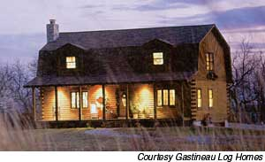
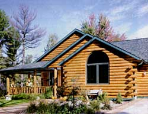
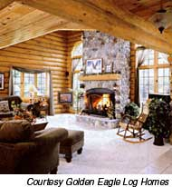
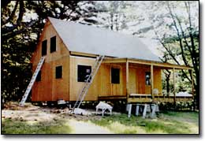
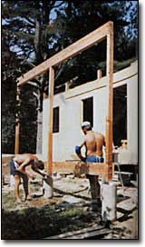
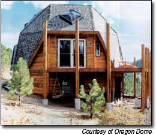
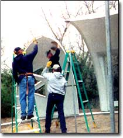
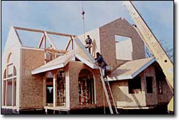
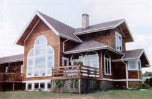

With so many decision, to make thinking about building a new home can be an exciting but daunting prospect. Wouldn't it be nice if you could order your new Home from the catalog and have everything delivered to the building " site, ready for assembly? You can. Just order a kit home.
Building a home from a kit is not a new idea. Although Seats Roebuck and Company often is credited with inventing the mail-order kit house the Aladdin Company of Bay City, Michigan. began the practice in 1906 (Sears offered their first "official" kit home in 1916). Today. hundreds of companies Still manufacture kit Homes.
Most of these kits fall into one of four categories: log homes, timber-frame homes, domes. and panelized houses Some manufacturers offer hybrid combination .An enormous range of choice, exists within each category. A kit home can be anything from a basic starter home, to a million-dollar showplace. All kits arrive in pieces - many, many - pieces-that need to be assembled by the contractor or the homeowner. Some kits fall into a "precut" subcategory, where all Darts are factory cut. While others require some onsite cutting and trimming.
Building any home can be a satisfying albeit stressful, challenge but building a kit can make the process a little easier because the basic plans and many technical details already have been worked out by the kit manufacturer.
The more work you decide to do yourself, the more money you can potentially save. We say "potentially" because correcting some construction mistakes can be expensive. Learning as much as possible about every aspect of your kit-home project before you begin can save you a lot of anguish later on when construction is underway. If you have lots of time, and are self-reliant, patient and a fast learner, you may he able to do much (or all) of the work yourself. If not, you will probably need some help.
"If you've got some construction knowledge and ability, virtually all house kits can be built by a homeowner," says Rob Pickett, who heads a consulting firm in Hartland, Vermont, that specializes in the methods and materials of housing production. "But if you are a complete beginner and have not had any training, I don't think most kit manufacturers would recommend that you tackle the construction yourself."
Fifteen to 20 years ago, many manufacturers advertised their kits as do-it-yourself projects, but today the vast majority of homeowners opt to have their kit homes built by contractors. Kit homes usually go up fairly quickly, especially if they are assembled by a professional builder.
Because each kit-home project is unique, costs will vary depending on what is - and is not - included in the package and how much of the work you are willing (or able) to do yourself.
As a general rule, a kit-home package will be roughly one-quarter to one-third the total cost of the finished home. It s extremely important to understand that the price of the package is only pan of a much larger picture.
Home kits usually only include the materials for the exterior shell of the house. The labor - yours or a contractor's - probably will not be included in the quote. The cost of finishing the interior generally is not included in the kit price either, nor are the costs of land and utilities.
Here are reports on the four categories of kit homes currently available.
Living in a cozy log cabin in the woods is an attractive fantasy for many people. When you begin to research the subject, you will quickly discover that there are many choices. More than 300 manufacturers market log kit homes, and trying to figure out which one to choose can be a real challenge.
"It's a daunting task," says Rich Horn, sales manager for Northeastern Log Homes in Kenduskeag Maine. "No two packages are alike, so it's very difficult for the consumer to compare the proverbial apples with apples."
Some log kits are hand-crafted from whole logs, which can be a labor-intensive process. Other kits are made with kiln-dried, factory-milled logs. Smaller companies usually produce handcrafted log kits, while larger firms with dealers all across the country manufacture milled kits. Many companies provide an experienced supervisor to help erect the log shell.
Keep a number of basic issues in mind when you select a manufacturer, says Horn. Find out how long the manufacturer has been in business. Inquire about the quality and quantity of materials in the kit: Are the logs from sustainably managed forests? Also determine if the company will provide structural, certified engineering or energy calculation services.
"The company should be able to supply a list of experienced builders in your area," Horn says. "You also will want to know about the materials and how they are delivered, and how well the company works with the builder and the homeowner."
Virtually all log homes tend to expand and contract in response to temperature and humidity, which makes the sealing system between the logs a critical component. Also, many log homes shrink substantially after they have been built, so you need to be aware of this quirk ahead of time - and plan accordingly.
Bruce and Patricia Bonnett of Wheelock, Vermont, have lived in their kit log home since June 2002. Except for the poured concrete foundation and the metal roofing, Bruce, his son and a friend did the work themselves. The project took them about nine months to complete.
"We all had a little construction experience," Bruce Bonnett says, "but none of us had ever built a log kit home before." The most difficult part of the project was getting the first course of logs started, he says. "After that, the rest just sort of fell into place; it really wasn't that hard." Although Bonnett admits he made a few minor mistakes, he is very happy with the way the house turned out. "I'd definitely do another one," he says.
Many years ago, homes often were built with heavy timber framing. But during most of the 20th century, "stick-built" construction, which primarily utilizes 2-by-4-inch and other dimensional lumber, has been favored. Today, however, timber framing (also called post-and-beam construction) is enjoying a renaissance, and many timber-frame houses, barns and other structures are available now as kits.
For the past 32 years, Shelter-Kit of Tilton, New Hampshire, has been making timber-frame kits that are specifically aimed at the amateur owner-builder. Andy Prokosch, the company's founder-president, says that building your own timber-frame home is not for everyone. "It does take a lot of time and effort, and for some people this just doesn't work," he says. "But a lot of people really want to be involved in planning and building their own home, and I think that's very important. Also, by doing it themselves, they probably are going to save a substantial amount of money."
John Doherty of North Sandwich, New Hampshire, had no previous construction experience; nevertheless, he and his 22-year-old hired helper managed to complete Doherty's house in about five months. Handling some of the long, heavy timbers proved to be a challenge, but the hardest part for Doherty was the roof. "I'm afraid of heights, and working up there with pieces of plywood and bundles of shingles was the scariest part of the whole project," he says. "It was a lot of hard work, but I love the house."
With no interior structural walls, a timber-frame house lends itself to almost infinite flexibility in terms of interior layout. "It's a wonderful type of design to work with," says Doherty. "We found that we could move rooms around from the original plan without any problems; the flexibility is incredible."
Because of their self-supporting design, timber-frame homes can offer large areas of wall space for windows, making them particularly suitable for passive-solar design. A properly oriented timber-frame home with heavily insulated roof and wall panels can be extremely energy efficient. However, almost any well-sited kit home with sufficient south-facing window area and heat-storage capacity can achieve similar passive-solar gains.
"A dome has plenty of room on the main and loft floors, and lots of light and vault without the waste of attic space that generally is expensive and large in a conventional home," says Linda Boothe, marketing director of Oregon Dome in Veneta, Oregon.
Boothe says that a dome is easier to construct than other types of structures. "Although the owner-builder may have a bit of a struggle the first time they cut a piece of insulation or Sheetrock, after that the pattern is repeated many times," she says.
One of the other advantages of a dome is the speed with which the basic shell can be erected. Pat and Norm Miller built their 32-foot-diameter dome as a weekend retreat near Canyon City, Colorado. With the help of a few friends, the Millers put the dome together, including installing the windows and doors, in one day. "Our friends didn't believe that it would be possible, but it was," says Pat. "The pieces were color-coded and numbered, and they all fit together beautifully."
The dome went up quickly, but the finishing work was more time-consuming. The roof shingling and much of the interior work proved to be a challenge. "There's a lot of geometry involved, and if you are going to do the work yourself, be prepared to have the proper tools to cut all the angles," she says. "Every shingle had an angle cut in order for the roofing to work properly."
Although the Millers had some remodeling experience, they had not previously built a home from scratch. They did subcontract the foundation and insulation work. Despite the challenge presented by some of the finish work, the Millers love their dome. "It's a very open and flexible structure, and the finishing techniques that you can apply can be very different from a conventional home," Pat says.
Panelized-home kits all depend on a similar "systems-built" strategy, in which the main components are manufactured in a factory. A panelized home can use an open panel - a frame component with sheathing on the outside that is not insulated or finished on the inside, or a closed panel - a more finished version of an open panel, or a structural insulated panel (SIP). A SIP is a piece of high-performance rigid foam insulation sandwiched between two sheets of oriented strand board. SIPS can be used for floors, walls and roofs, resulting in very energy-efficient structures.
In addition to the SIPS, a wide assortment of miscellaneous subassemblies can be included in a panelized house. Roof trusses usually are part of the package as well (some packages include virtually everything needed to finish the home). After manufacture, the house components are trucked to the building site for assembly.
Floor plans of panelized homes generally are very flexible: Hundreds of configurations are available, and some manufacturers will create a custom panel kit from any blueprints you choose.
Most panelized house shells can be assembled in a few days by a small crew of experienced carpenters with the help of a light crane. This saves quite a bit of labor expense and reduces materials waste compared to traditional stick-frame construction.
But because everything arrives at the job site at once, it's extremely important for the framing crew to be ready and waiting when the materials are delivered. The speed and complexity of the shell erection process makes most panelized homes particularly challenging for owner-builders.
Once the exterior shell is up, it generally takes two or three months for a contractor to complete the interior finish work. It would take average ownerbuilders longer, especially if they are trying to live in the house at the same time it is being built.
In a side-by-side comparison of a panelized house and a traditional stick-built house, according to the National Association of Home Builders, the panelized house offered an overall 16 percent cost savings, utilized 26 percent less wood fiber and required 63 percent less construction time.
Eric Freeman of Marshall, North Carolina, lives in a panelized home he completed in March 2003. "We framed it in three and a half days, with the roof on with felt paper, and windows and doors installed," he says.
The entire project took about five months from start to finish, and although Freeman is an experienced builder, he says that at times, even he experienced some difficulty keeping up with the pace of the project.
"You've definitely got to be on top of what's going on so you don't miss anything," he says. Nevertheless, Freeman is so pleased with his home and enthusiastic about panelized construction that he says, "This is the only way to build a house."
The best ways to "green" any kit home are to design and orient the home for maximum passive-solar heat gain, and to incorporate large south-facing windows and plenty of thermal mass such as concrete or ceramic tile floors, which store heat. (See "Build a Solar Home," August/September 2002.)
To complete your "green" design, choose environmentally friendly and energy-efficient building materials.
• For wood-frame kit homes, find dealers who use wood from sustainably managed forests.
• Insulate, insulate, insulate! For the best energy efficiency, select the proper R-value for your region, and insulate ceilings, walls and floors well. Weatherstrip and caulk around windows, and seal all cracks and crevices. Many green builders choose cellulose insulation, made from recycled newsprint and boric acid, but other "green" options, such as cotton and wool batts, are now available. (For more information, read "All About Insulation," December/January 2003.)
• Install double- or triple-pane windows with high-performance glass to save energy and cut your heating and cooling costs.
• Use low-VOC (volatile organic compound) paints and finishes to minimize offgassing and to ensure better indoor air quality.
• Consider natural roofing alternatives, such as slate or tile, or high-tech shingles made with recycled materials. US Century's FIexShake is made primarily from recycled waste tires and carries a 50-year warranty.
• Feed your home's energy needs with power from photovoltaics, wind generators and microhydro systems. Heat it with renewable sources - solar, wood, pellet, corn, biodiesel or geothermal.
• If you decide to assemble a kit home, you will have to convince your mortgage lender that you are capable of successfully completing the project. Do this before you buy the kit.
• Expect to spend up to a year building and finishing a kit home yourself.
• If you hire a contractor to build your kit home, choose someone who has experience with a factory-built home. Many kit manufacturers can provide you with the names of skilled contractors in your area.
• If you want to be directly involved in the construction of your kit home but don't feel competent to manage the entire project, consider hiring yourself out to your contractor as a worker.
• Significant differences exist between various kit-home packages; read the specifications and the contract carefully so you know exactly what you are getting.
• Kit-home warranties also vary: Some provide lifetime warranties, some offer 20-year warranties and some provide very little coverage.
• Some local jurisdictions may require stamped or approved house plans; be sure your kit-home manufacturer can supply them if required.
• Start the building permit process three to six months in advance of your project to minimize last-minute delays in your schedule. In some locations, you may have to educate the local zoning administrator or building inspector about your kit home before you obtain a permit.
• Shipping costs can add up; the closer you are to a kit manufacturer, the lower the cost of transport will be.
• Be prepared for your kit's arrival; one or more tractor-trailers will suddenly show up, needing to be unloaded and, depending on the type of kit, the house may need to be erected promptly.
• Provide space to safely store and protect your kit's components from the weather (and possibly from theft).
• Arrange the components in a logical order for easier construction flow.
Mother Earth News
|
 SHELTER-KIT, INC. Golden Eagle Log Homes (www.golden-eagle-log-homes.com) in Wisconsin offers comprehensive packages that include many interior fixtures |
 SHELTER-KIT, INC. Shelter-Kit ( www.shelter-kit.com ) of Tilton, New Hampshire, offers a range of post-and-beam kits designed for ownerbuilders. |
 Popularized by the inventor of the geodesic dome, R. Buckminster Fuller, dome home are relatively easy to construct and can withstand rricanes and earthquakes better than most conventional buildings |
|
 Structural insulated panels (SIPS) can be custom designed to build any style of home. For a look at this house after it was completed, see below. |
 This award-winning, Craftsman-style home in Madison, Wisconsin, blends the ancient art of timber-framing with modern insulated-panel construction. |
 |
|
 |
 |
 |